Les ruines du Chateau de Castelpor sont entre Marsa et Joucou, sur les hauteurs de la rive droite du Rébenty au hameau de Taffine (commune de Marsa), à l'arrière de ce rocher :
"Salut, je suis allé à Castelpor cet après-midi.


Pont sur le Rébenty depuis la RD 107 (ancienne voie de grande communication n°7) pour accéder au domaine de Massol et au hameau de Taffine


Passage du pont sur le Rébenty en direction de Massols et Taffine
"Pour y aller on peut passer par ce petit pont qui traverse le Rebenty. Ensuite il faut prendre la petite route étroite qui monte aussi au domaine des Massols. Quand je dis que c'est petit, ce n'est pas une figure de style, j'ai eu du mal à croiser une voiture sur la route et je ne savais pas où me garer une fois au hameau.
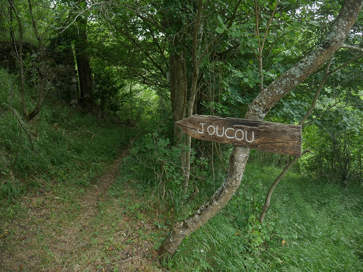Chemin vers joucou depuis le Hameau
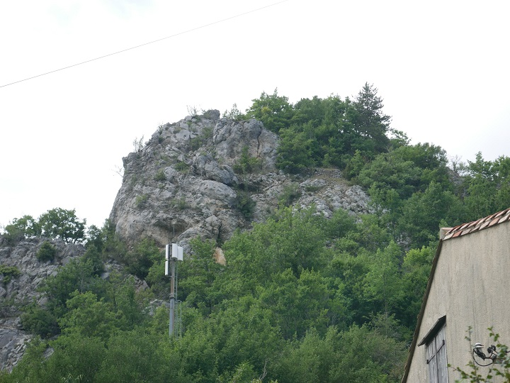Rocher soutenant le chateau, objet de la randonnée
"Le Hameau est une propriété privée, privilégier donc un autre chemin pour arriver au château (depuis Joucou ?). Car pour monter au rocher qui est au dessus, il faut passer par un jardin. Ce jour, j'ai toqué à la maison et je suis tombé sur un monsieur qui y faisait des travaux. Je lui ai donc expliqué ce que je faisais et il m'a autorisé à passer. Il m'a indiqué qu'un historien était venu il y a quelques temps et qu'il y avait trouvé des poteries. [Renaud Labadie-Savy m'indique que c'est lui qui a fait ces découvertes : "Ces céramiques datent probablement de la deuxième moitié du Moyen-Âge"]


Ruines du château de Castelpor
"Voici les ruines du château. J'ai pu y deviner les fondations éventuelles d'un donjon ou une tour carrée. Sinon rien d'exceptionnel, le propriétaire pense que les pierres ont servi à la construction du hameau en dessous. Si tu vas voir sur le site Marsa, tu peux voir le nom du hameau et apprendre qu'auparavant c'eût était un castrum.

 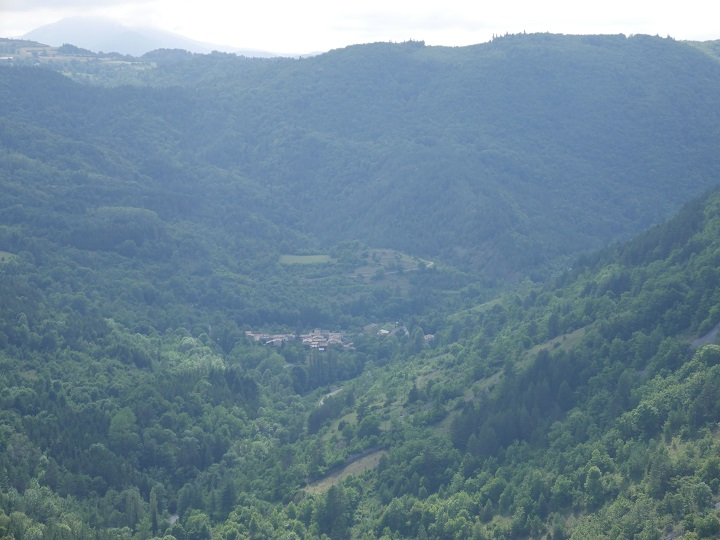
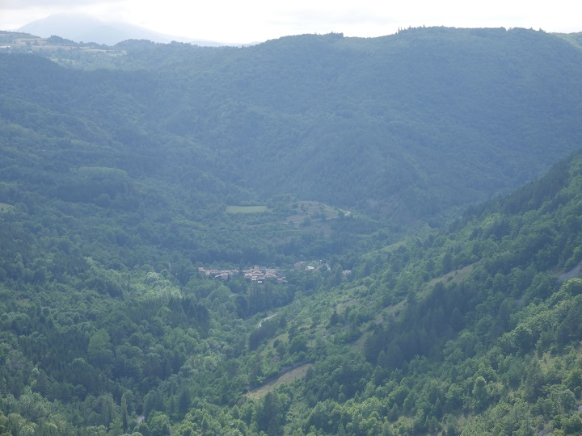

Vue depuis le rocher de Castelpor
"Voici les vues depuis le haut du rocher. On peut notamment voir joucou la vallée du rebenty et même jusqu'à la pointe au fond qui est à Lapradelle, avec juste à gauche la montagne de Saint Martin (Planèze, le Clot, les Roumens). On voit aussi le hameau d'en dessous et le domaine des Massols.
Pour l'anecdote j'ai aussi croissé un beau cerf en haut.
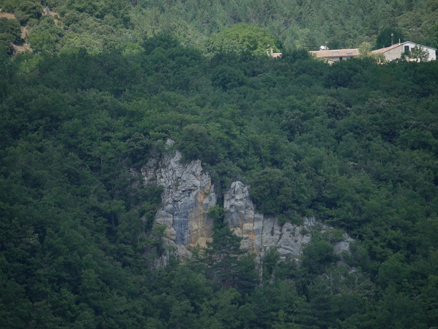Vue de Quirbajou depuis le chemin vers Marsa
"Je suis aussi allé me promener par le chemin qui part à gauche de la route avant d'aller à Marsa. À force de monter j'ai pu avoir une vue sur Quirbajou et le chemin qu'on a pris pour y aller.
Les grands rochers sont ceux où il y avait les vautours et ceux un peu plus petits sont ceux avec la fameuse marque du baton de St Martin contre le diable."
Paul Teulière
Moi aussi, je voulais les voir ces ruines...
Aussi Amédine, Silas, Laurence et moi sommes allés à Joucou chercher le chemin de Taffine pour une petite rando facile (après les gorges de la Pierre-Lys tout est facile).
Magifique chemin parfaitement entretenu, jusqu'à la limite de Marsa...
Après, et bien il faut le trouver le chemin...
Nous voilà arrivé au hameau..., et pour revenir voilà la direction
Le rocher du chateau nous apparaît enfin
Nous croisons une Pierre étonnant dans un jardin hameau. A-t-elle appartenue au chateau ?
Quelques obstacles : les remblais ayant retenu les terrains entourant le château

Enfin au pied du rocher
Les premiers murs de pierres après un petite grimpette sans difficulté
Point de vue depuis le rocher de Castelpor
Un espace plat ayant servi d'habitation ?
Une paroie vertical de cette habitation donnant sur le vide
Le plus "beau" mur du chateau - vraissemblable empilement posterieur au désarmement du chateau
Vue du hameau de Taffine depuis le chateau
Les ruines des murets qu'on pouvait déjà apercevoir depuis le hameau
Vue de l'apic depuis le haut d'un de ces murets
Encore un étage à monter...
Vue du coté de Joucou cette fois, au plus haut du rocher
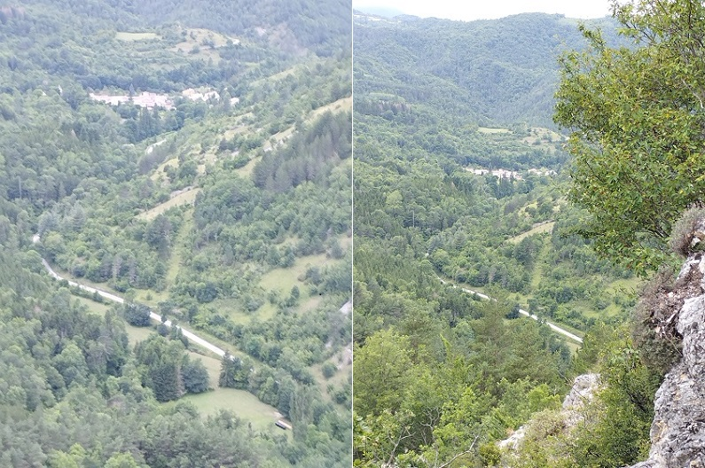 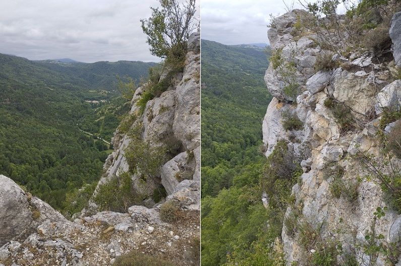Le chateau de joucou dans son champ, et le village derrière la branche de buis...
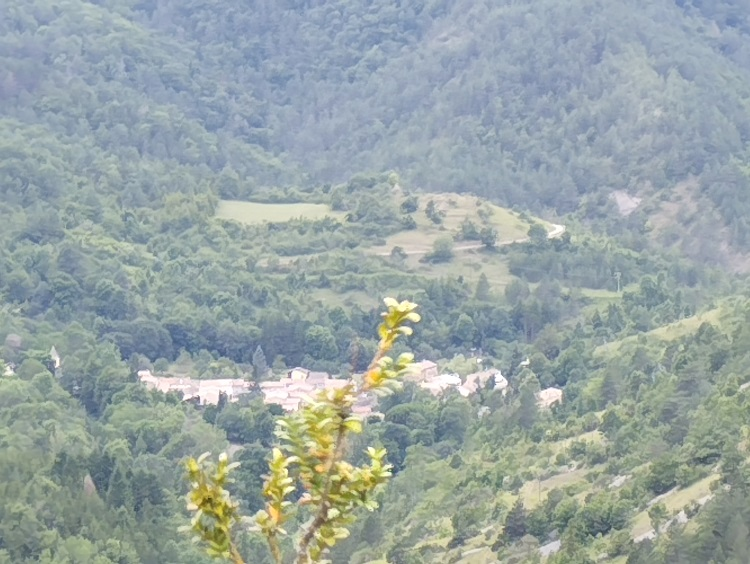Le dernier rocher
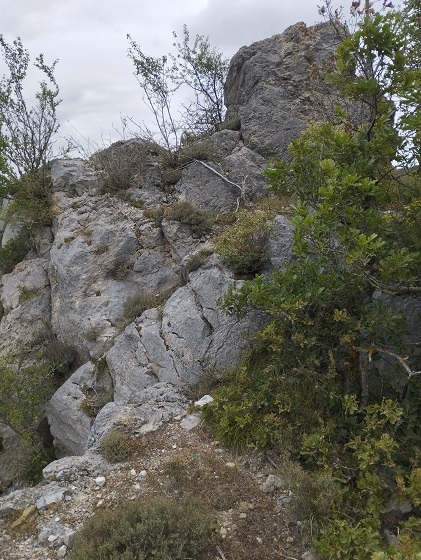Et l'apic (qu'on reverra d'en bas)
Un peu de vide...
Aller, on redéscend. On observe mieux les différents murets rencontrés.
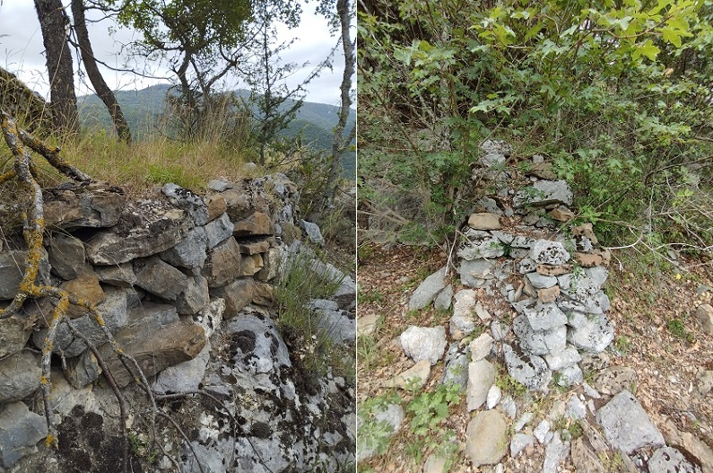 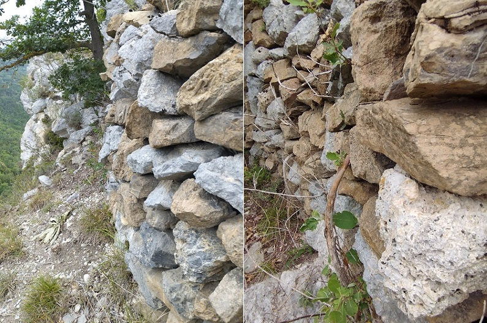Des traces de mortier entre les pierres : doit être un mur d'origine celui là
A suivre
Le chateau apparait sous les noms de Castrum-por ou Castrum porrum, Castelpor ou Castelpore, Castelport... (voir ci-dessous l'extrait du dictionnaire topographique de Sabarthès), il serait d'origine wisigothe, dépendant des comtes du Razès, serait cité du IXe au XVIIe siècle dans les archives communales de Belvis ([si vous trouvez traces de ces archives merci de me l'indiquer...]). Le fief associé au chateau aurait un temps compris, avant la croisade contre les albigeois, les villages de Marsa, Quirbajou et d'Altozoul [Artosoul ?] et une partie de la forêt des Fanges. D'après l'inventaire Roques, vers 994, Odon de Niort aurait donné le château à sa femme, avec ceux d'Aniort et de Belfort. Vers 1080, un hommage des châteaux d'Aniort et de Castelpor est rendu par Guillaume, fils de Névié, à Ermengarde, épouse de Raymond Bernard de Trencavel. En 1152 le seigneur de ce fief, autre membres de la famille d'Aniort prêta serment de fidélité à Raymond de Trencavel, comte du Razès. En décembre 1175, Roger, vicomte de Béziers reçoit l'hommage des seigneurs d'Aniort, Belfort et Castelpor.
Le château reste dans la famille des Aniort jusqu'en 1240 où Gerault d'Aniort l'offre en gage au roi. Et en 1244, d'après l'Histoire Générale du Languedoc (Tome 8, colone 1452) Bernard d'Erali y commandait au nom du roi avec trois sergents d'armes. Castelpor subit la destruction lors de la deuxième invasion espagnole, en 1496 (luttes entre Charles VIII et Ferdinand le Catholique, roi d'Aragon). En 1667, Anne de Plaigne épouse de Guy de Fau, comte de Pibrac, dans un acte notarié à Belcaire s'intitule seigneuresse de Marsa, Quirbajou et Castelpor. La seigneurie de Castelpor passa alors dans la famille de Pibrac qui dut la garder jusqu'à son extinction.
Situé sur la rive droite du Rebenti, il gardait le défilé entre Marsa et Joucou, comme son nom l'indique (Castrum Porti, château de passage), sur un rocher se détachant de la vallée, il défendait un passage traversant la vallée du Rébenty pour aller de la plaine de Sault au Donnezan par Aunat. Ne subsistent que quelques restes de murs. De ce château il était possible d'apercevoir celui de Joucou ce qui assurait à vu la ligne de défense Belvis / Able / Joucou / Castelpor le long du Rébenty
Dans le "Dictionnaire topographique du département de l'Aude comprenant les noms de lieu anciens et modernes" par l'abbé SABARTHÈS) apparaissent les références suivantes :
CASTELPOR, chât. féodal ruiné, commune de Joucou [erreur courante (Peut-être que Sabarthès en est à l'origine ?...), les ruines du château sont à Marsa].
— Castrum Por, IXe S.-1744 (arch. com. Relvis).
— Castellumpor; 1100 (H. L., V, pr. 178, 3°).
— Le castel de Castelpor, 1152 ( ibid. , pr. 585, 2°).
— Castrum Porr, 1240 (H. L., VIII, pr. 334).
— Castrumporrum, 1275 (de Teule, p. 38).
— Castrum Porum, 1360 (arch. Aude, G 2, 1'. 50).
— Le lieu de Castroporre..., Chataupour..., Chasteau Pour, 1240-1589 (bibl. Carc, ms. 9551, ff. 1, 137, 23 1).
— Castelporc, où il y a apparence d'un chasteau , 1594 (arch. Aude, C, rech. dioc. Alet, l'. 132).
— Castelpourrou, 1639 (arch. com. Narb., Invent. Rocq, III, 344).
— Signalons la mauvaise graphie : Castrum Porcum, 1377 (Ordonn., VI, 271).
1Géographie historique du Pays de Sault au Moyen Age (Aude) de Jean-Pierre Sarret et le défilé de Joucou ou les Gorges de Joucou de Jean-Pierre Lagache